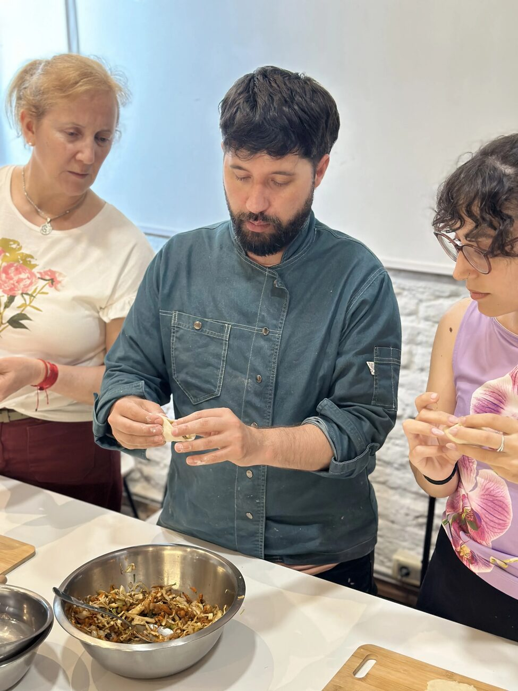

Una cocina con historia.
Clorofila no nació de una tendencia. Nació de una convicción: que cocinar bien es una de las decisiones más importantes que tomamos todos los días, y que nadie debería depender de recetas para hacerlo.

Por qué existe Clorofila.
En 2013, cuando Clorofila abrió sus puertas en Parque Rodó, no había en Montevideo un lugar serio para aprender a cocinar saludable de verdad. Había recetas de internet, modas dietéticas y mucho alarmismo — pero no un espacio con criterio real donde entender el alimento.
La propuesta siempre fue la misma: enseñar a cocinar desde la comprensión, no desde la dependencia. No "seguí esta receta" sino "entendé por qué esto funciona". Esa diferencia cambia todo.
Más de una década después, con más de 1200 alumnos formados, seguimos siendo el mismo espacio. Sin dogmas, sin alarmismo, sin modas.
Año de fundación en Parque Rodó
Alumnos formados
Años enseñando
Años de experiencia culinaria
Valores, no etiquetas.
Basada en plantas
Vegetales, hongos, semillas y frutas como protagonistas. No porque está de moda — porque es una forma coherente de relacionarse con el alimento y los animales.
Comprensión profunda
Enseñamos los por qués: química del alimento, microbiología de la fermentación, comportamiento de las grasas. Cuando entendés el mecanismo, no necesitás recetas.
Sin dogmas
Ni dietas mágicas, ni alarmismo, ni modas. Una cocina construida con tiempo, evidencia y respeto por los alimentos. Lo que no tiene sentido, no lo enseñamos.
Comunidad
El estudio, los talleres y el curso forman parte de un ecosistema. No es solo aprender a cocinar — es pertenecer a una comunidad con la misma forma de pensar los alimentos.
Quiénes enseñan.
Fundador · Coordina el curso
Leonardo Lemes
Chef, docente e investigador gastronómico con 25 años de experiencia y 13 enseñando. Pionero en Uruguay en el desarrollo de una cocina basada en plantas, fermentación y comprensión científica del alimento. Su metodología parte de una premisa simple: para cocinar bien hay que entender qué pasa en la olla, no seguir pasos en papel.
Formación
- Permacultura — Na Luum
- Agricultura de Bosques de Alimentos — Ipoema, Brasil
- Gestión Cultural — CLAEH
- Medicina Tradicional China — Neijing (en curso)
Participa en el curso
Lic. Nut. Micaela Gago Moral
Licenciada en Nutrición y terapeuta nutricional. Articula alimentación, cocina y bienestar desde una mirada integradora que va más allá de los macronutrientes. Desde hace cuatro años acompaña procesos integrando Ayurveda, fitoterapia y nutrición informada en trauma.
Enfoque
- Nutrición integradora y holística
- Ayurveda aplicada a la alimentación
- Fitoterapia y nutrición informada en trauma
- Acompañamiento de procesos de salud
¿Buscás trabajar con Clorofila o con Leonardo en otro contexto? Ver todas las formas de trabajar juntos →